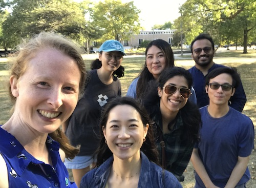

|  |
About usThe UChicago CompLing Lab is a community of linguists, computer scientists, and other researchers excited about the use of computational methods to study language in humans and artificial intelligence. Our research spans areas of natural language processing (NLP) and computational cognitive modeling.In our NLP research our particular focus is on evaluation and improvement of understanding of compositional meaning in language, as well as a host of other dimensions of linguistic competence. In our computational cognitive modeling work, the focus is on designing transparent computational frameworks to test hypotheses regarding the mechanisms underlying real-time processing of language in humans. |